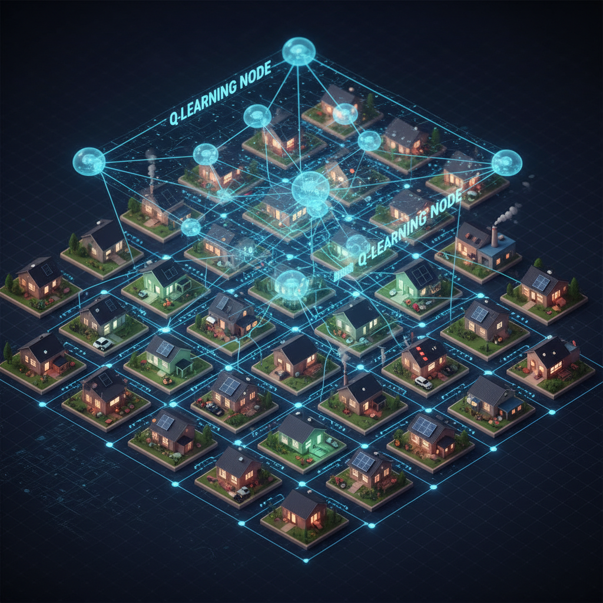
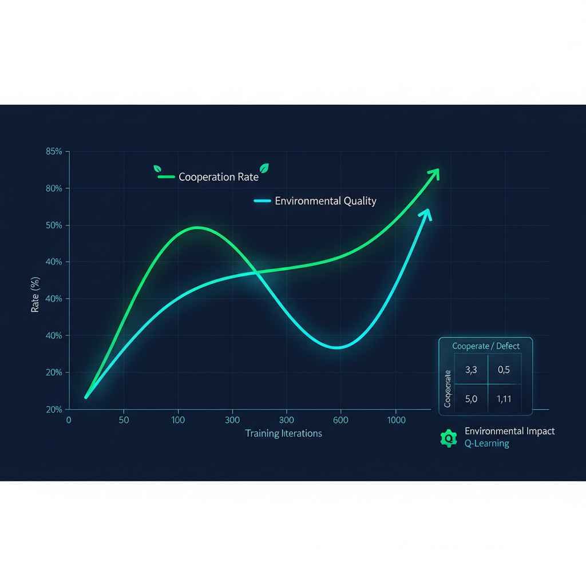

A simulation framework that combines Game Theory and Multi-Agent Reinforcement Learning (Q-learning) to study when households cooperate for sustainability — and to design reward, penalty, and group-incentive mechanisms that turn social dilemmas into long-term cooperation.


Sustainability is one of the defining collective-action problems of our era. Individuals face a fundamental tension: environmentally friendly behavior is often costly in the short term, while unsustainable choices offer immediate convenience — yet long-term environmental damage is shared by everyone. The result is a classic social dilemma where individually rational decisions produce collectively poor outcomes.
This research proposes EcoGame AI, a multi-agent reinforcement-learning simulator in which 50–100 household agents repeatedly choose between cooperating (eco-friendly) and defecting (non-eco). Each agent updates its policy via Q-learning, while the environment evolves according to the aggregate behavior of the community. Game-theoretic payoffs encode the social dilemma; learning dynamics reveal whether — and under what conditions — populations of self-interested learners converge to cooperation.
Beyond observation, the central contribution is mechanism design: we systematically compare four policy regimes — no intervention, individual rewards, individual penalties, and group-based incentives — to identify which interventions most reliably stabilize cooperation, where tipping points occur, and how outcomes change with the strength of incentives. The findings aim to inform policy design for real-world sustainability programs.
Real-world environmental decision-making mirrors the structure of well-known cooperative dilemmas: short-term self-interest is locally optimal, yet collectively destructive over time.
Sustainable behavior carries an immediate private cost (time, money, convenience). Unsustainable behavior carries a delayed public cost (pollution, climate impact) — distributed across the community and future generations.
Without intervention, rational agents are tempted to defect, even though everyone is worse off if everyone defects. This is the structural barrier real-world climate policy must overcome.
Four questions guide the investigation and define the scope of expected contributions.
| ID | Hypothesis | Tests Against |
|---|---|---|
| H1 | Without intervention, cooperation rates in the population will collapse below 25% within 200 iterations as agents learn that defection dominates locally. | RQ1 |
| H2 | Group-threshold incentives will produce higher steady-state cooperation than equally-budgeted individual rewards, by aligning private incentives with community-level outcomes. | RQ2 / RQ4 |
| H3 | The system exhibits a sharp tipping point near a 40–60% cooperator share, above which cooperation self-reinforces and below which it decays. | RQ3 |
| H4 | Penalty mechanisms achieve faster convergence than equal-magnitude rewards, but reward mechanisms produce more stable long-run equilibria with lower variance. | RQ2 |
Two complementary lenses define the model: game theory specifies the structure of payoffs, and reinforcement learning explains how agents adapt over time.
A discrete-time loop where 50–100 agents act simultaneously, environment dynamics update, and every agent learns from the experience.
At each timestep, every agent independently observes its state and selects an action via an ε-greedy policy over its Q-table. No agent has access to others' Q-values; all coordination is implicit, mediated through the shared environment.
Each agent receives an immediate payoff based on its own action, the global cooperation rate, current environmental quality, and any active policy intervention (rewards, penalties, or group bonuses). Rewards are configurable to test mechanism designs.
Environmental quality evolves according to a stylized decay-and-recovery dynamic — net cooperation contributes positively, while net defection accelerates decay. This couples today's collective behavior to tomorrow's payoffs.
Every agent updates Q(s,a) using the standard Bellman equation with learning rate α and discount γ. Over many iterations, the Q-table converges toward each agent's best response given the population it experiences.
Cooperation rate, environmental quality, total welfare, action distribution, and policy cost are logged each step. The loop repeats for 500–1000 iterations, with multiple seeds to assess statistical robustness.
Hypothesized trajectories under each policy regime over 1000 iterations.
The simulator runs the same agent population under four policy regimes, holding all other parameters fixed. The contrast isolates the causal effect of each intervention.
Agents act freely with no external incentives. Establishes the null hypothesis — does cooperation collapse, oscillate, or self-organize? This baseline anchors all comparisons.
Eco-friendly behavior earns a per-action subsidy (r⁺). Tests whether positive reinforcement is sufficient to overcome the short-term cost of cooperation.
Non-eco behavior incurs a fine (r⁻). Tests whether deterrence shifts learned policies more efficiently than equivalent-magnitude rewards.
If community cooperation rate exceeds θ (e.g., 60%), every agent receives a collective bonus. Tests whether aligning private incentives with group outcomes unlocks coordination.
Each condition is run with multiple incentive magnitudes (low / medium / high) and multiple random seeds (≥30 per cell) to enable statistical comparison and sensitivity analysis.
A multi-dimensional evaluation captures behavioral, environmental, and welfare outcomes across mechanisms.
Fraction of agents choosing eco-friendly action per round, tracked across the full training horizon — both transient and steady-state values.
Aggregate health score of the simulated environment over time, reflecting the cumulative impact of actions and the rate of decay vs. recovery.
Sum of agent payoffs minus policy cost. Captures the net societal benefit including the price of running the incentive program.
Variance and oscillation of the cooperation rate at steady state. Stable equilibria are preferred over high-mean but volatile outcomes.
Response of outcomes to changes in reward / penalty magnitude. Identifies "minimum effective dose" for each policy regime.
Critical cooperation thresholds above which cooperation self-reinforces and below which it collapses, located via parameter sweeps.
A 12-week execution plan from literature review to final paper and interactive simulator demo.
| Phase | Weeks | Activities | Deliverables |
|---|---|---|---|
| Literature Review | W1 – W2 | Survey multi-agent RL, public-goods games, cooperation dynamics, evolutionary game theory, behavioral economics of climate action. Set up Python / Mesa / PettingZoo environment. | Annotated bibliography, reproduction of one MARL cooperation baseline |
| Environment & Baseline | W3 – W4 | Implement household-agent environment, reward function, environment dynamics. Code Q-learning learner. Run no-intervention baseline. | Working simulator, baseline results, parameter documentation |
| Mechanism Implementation | W5 – W6 | Add reward-based, penalty-based, and group-threshold mechanisms. Implement parameter sweeps and seed control. | 4 mechanism conditions × 3 magnitudes × 30 seeds — generated dataset |
| Analysis & Tipping Points | W7 – W8 | Statistical analysis (ANOVA, bootstrap CIs). Identify tipping points via parameter sweep. Build per-mechanism characterization. | Result figures, tipping-point estimates, statistical comparisons |
| Interactive Simulator | W9 – W10 | Build Streamlit dashboard for interactive exploration: adjust agents, costs, incentives, decay rates. Auto-generate insight summaries. | Web-based EcoGame AI Simulator demo (deployed) |
| Writing & Submission | W11 – W12 | Write full research paper (8–12 pages). Prepare slide deck and recorded demo video. Internal review, revisions, submission. | Final paper, presentation slides, demo video, open-source repo |
This research aims to advance our understanding of cooperation, learning, and policy design through the following contributions.
An open-source multi-agent RL benchmark for sustainability dilemmas — a reproducible simulator that lets researchers test new mechanisms or learning algorithms against a standardized environmental-cooperation environment.
Empirical characterization of four policy regimes — quantifying how baseline, reward, penalty, and group-incentive mechanisms differ in convergence speed, steady-state cooperation, welfare, and stability under matched conditions.
Identification of tipping points — locating the critical cooperation thresholds at which cooperation becomes self-sustaining, and showing how different mechanisms shift these thresholds.
Group vs. individual incentive analysis — testing whether collective threshold-bonus mechanisms outperform individually-targeted rewards/penalties on long-run welfare per dollar of policy spend.
An interactive EcoGame AI Simulator — a web-based tool that allows policymakers, students, and researchers to interactively explore parameter trade-offs, generating policy recommendations and AI-driven insights.
Beyond the academic contribution, EcoGame AI is designed to bridge AI research and real-world environmental decision-making.
Provides quantitative evidence on the relative effectiveness of subsidies, fines, and community-level bonuses — helping municipalities and NGOs choose mechanisms with the highest expected cooperation per dollar.
Offers a controlled testbed for hypotheses about why people don't act sustainably, complementing field experiments and large-scale surveys with mechanistic simulation.
The interactive simulator can be used by students to develop intuition for collective-action problems, mechanism design, and reinforcement learning — connecting AI, economics, and environmental science.
Visualizing tipping points and group incentives gives community organizers concrete framings for why "we just need a critical mass" is a real, measurable phenomenon — and how to design programs that reach it.